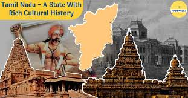
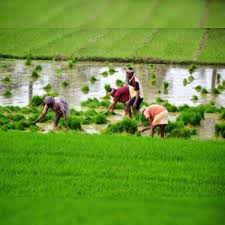
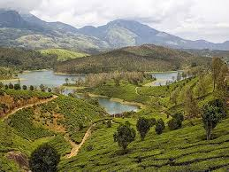

Culture: Dive into Tamil Nadu's unique arts,
music, and festivals.
Temples: Learn about the architectural marvels and spiritual heritage.

-This is project developed by the TamilNadu government to showcase the various features of tamil nadu
This tag is used to preserve space and lines
It preserves the next line
|
 | |
Culture: Dive into Tamil Nadu's unique arts, |
Temples: Learn about the architectural marvels and spiritual heritage. |
|
|  | |
 |
| Agriculture | Traditional sports | Natural resources |
Join us!
Log in or sign up to embark on this incredible journey and be part of the Tamil Nadu story!
or